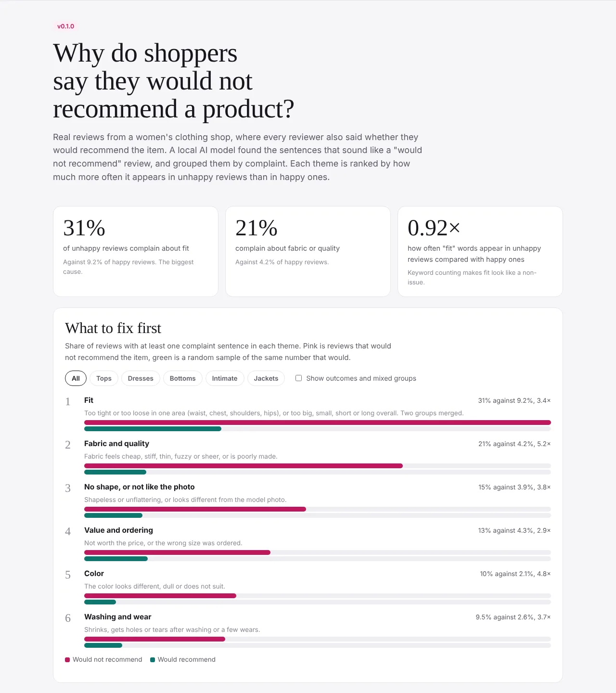

The question
Shoppers who would not recommend a clothing item: what are they complaining about, and what should the team fix first? And would counting keywords, the usual first step, give the same answer?

Approach
- Wrote the keyword list a PM would expect before running any AI, and did not change it.
- Took all 4,101 "would not recommend" reviews and the same number of random happy ones, split into 38,066 sentences.
- A small text model running locally turned each sentence into numbers. A simple model, trained on other reviews, flagged sentences that sound like a "would not recommend" review.
- Grouped the 9,274 flagged sentences into themes and ranked them by how often they appear in unhappy reviews compared with happy ones.
Headline numbers
| Theme | Unhappy | Happy |
|---|---|---|
| Fit | 31.5% | 9.2% |
| Fabric and quality | 21.5% | 4.2% |
| No shape, or not like the photo | 14.9% | 3.9% |
| Value and ordering | 12.6% | 4.3% |
| Color | 10.2% | 2.1% |
Share of reviews with at least one complaint sentence in the theme. Unhappy: 4,101 reviews that would not recommend the item. Happy: 4,100 random reviews that would.
Findings
Fit is the biggest cause, in every department
Fit complaints appear in 31.5% of unhappy reviews and 9.2% of happy ones, and lead in every department, from 28% for jackets to 33% for dresses.
Keyword counting hides it
Fit words appear in 47.2% of unhappy reviews and 51.1% of happy ones, because happy shoppers write "fits perfectly". Ranked by keywords, fit comes seventh of nine. Finding the complaint sentences first is what separates praise from problems.
Separate causes from outcomes
"I had to return it" is the sentence most specific to unhappy reviews (9.4 times more common) and the least useful for deciding what to fix. The page hides outcomes by default.
Fit, shape and ordering may share one fix
Fit, "not like the photo" and ordering the wrong size all point at the gap between what the shopper expected and what arrived. Better size guidance and photos on more body types might reduce all three. That needs a test.
What I learned as a PM
- Pick an outcome first. "Would not recommend" turns a pile of text into a question with an answer.
- Count complaints, not words.
- A small local model was enough. The analysis can be rerun on new reviews for free.
What I would do next
- Have a person label 50 sentences per theme to measure how clean the groups are.
- Rank products by fit complaints and test better size guidance on the top ones.
- Repeat on a second review source.
Limits: one shop, one category, English, no dates. Theme names were written by Claude from each group's top words and examples, and no person has checked the groups yet.